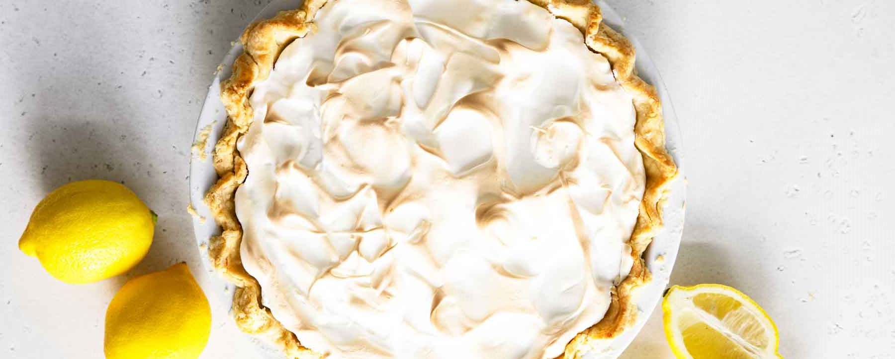

Mamas Homemade Lemon Meringue Pie

INGREDIENTS
2 tablespoons all-purpose flour
2 lemons, juiced and zested
1 (9 inch) pie crust, baked
6 tablespoons white sugar
DIRECTIONS
- Preheat Oven: Preheat oven to 350 degrees F (175 degrees C).
- Make Lemon Filling: In a medium saucepan...
- Whisk together 1 cup sugar, flour, cornstarch, and salt.
- Stir in water, lemon juice and lemon zest.
- Cook over medium-high heat, stirring frequently, until mixture comes to a boil.
- Stir in butter.
- Place egg yolks in a small bowl and gradually whisk in 1/2 cup of hot sugar mixture.
- Whisk egg vol mixture back into remaining sugar mixture.
- Bring to a boil and continue to cook while string constantly until thick.
- Remove from heat.
- Pour fling into bake pastry shell
- Make Meringue: In a large glass or metal bowl...
- Whip egg whites until foamy.
- Add sugar gradually and continue to whip until stiff peaks form.
- Spread meringue over pie, sealing the edges at the crust.
- Bake: Bake in preheated oven for 1o minutes, or until meringue is golden brown.